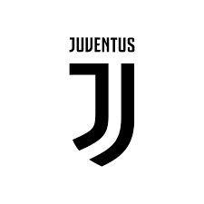
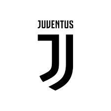
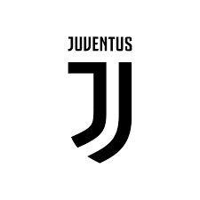

Equipos Más Exitosos


 

La UEFA Champions League es el torneo de clubes más prestigioso de Europa. Desde su creación en 1955, ha sido testigo de los momentos más emocionantes del fútbol mundial, con equipos legendarios compitiendo por la gloria.
| Año | Equipo Campeón |
|---|---|
| 2023/24 | Real Madrid |
| 2022/23 | Manchester City |
| 2021/22 | Real Madrid |
| 2020/21 | Chelsea |
